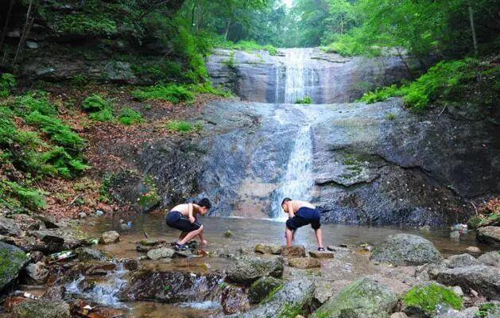
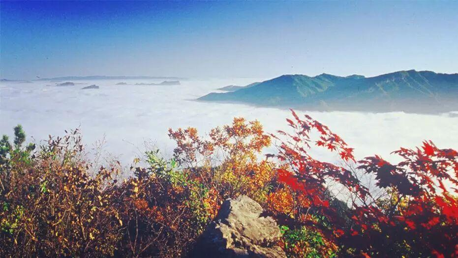
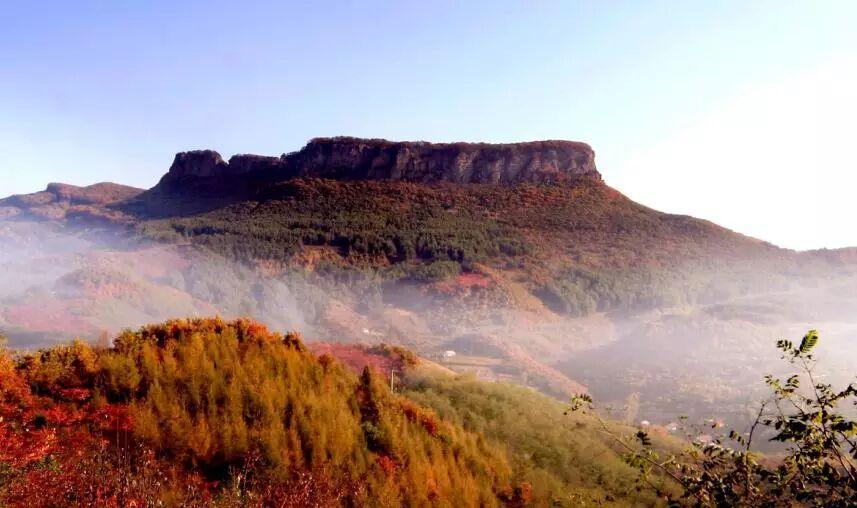
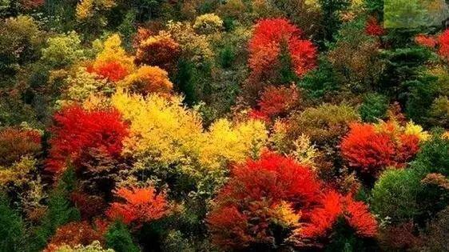
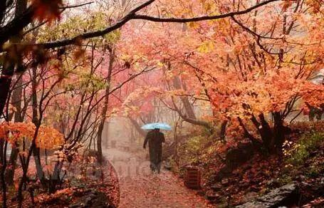

沈阳周边竟隐藏了十个小众旅游天堂！美得窒息！十一走起！
2015-10-01沈理电协
▼
每当小长假，
除了迫不及待地奔向远方，
也想在家门口随性走走！
没有长途跋涉的辛苦，
看一看那漫山遍野、火爆热情的红叶，
自由自在地溜溜达达，才是休假的全部意义啊！
▼
小编推荐沈阳周边的10个赏枫景点!
就一个标准：
都是能让你静静欣赏秋景的地方！
还等啥，赶紧去吧↓↓↓
大冰沟 藏在深闺的彩色世界
“秋意浓郁的梦境 / 她的多彩枫情 / 一如山城本溪“枫叶之都”/ 奇丽让人沉迷！“如果说被人忽视的天堂，大冰沟算是一个！红叶林、白桦林，红白相映，远观飞霞漫天，近赏如玛瑙般剔透玲珑。这里一直是摄友每年深秋必去蹲点的地方。“见过黄果树瀑布的人，说这大冰沟就是个小黄果树，保持完好的植被，适宜的小气候，造就了大冰沟。茂密的原始森林涵养了这高山流水，形成了汨汨欢歌，跌宕数十米的高山瀑布。
“这个时候除了红色，金色、绿色也是主色调，自驾的人随意驶入其中，便可轻易开启一场色彩的享受之旅。
门票：每人30元
地址：本溪市东南郊35公里的南芬区思山岭乡
自驾路线：沈阳浑南上高速，走沈丹高速过本溪口在桥头下道,第一个路口下道直行，注意观察沿途有路标，马上就到啦。（沈阳出发车程大约3小时）
汤沟 泡完温泉喝羊汤
“枫叶的形状像一把小巧玲珑的扇子 /又像凤尾鱼的大尾巴 /粗粗的叶柄像小松鼠毛茸茸的尾巴 /红色中透出绿意
“嫌关门山太挤，那就去汤沟瞧瞧吧！看完关门山的枫叶之诗意，到了本溪草河掌镇的汤沟，看在溪流之上，那红黄交织而成的秋色有着一点点嫩，一点优雅，一点娇柔，一点浓艳……
“汤沟著名的不仅仅是景色，还有温泉！汤沟的温泉水质很好，温度在60到70度之间！让疲惫的心舒缓轻松下来。时光在汤沟就这样静静流淌……
“泡完温泉，再喝一碗暖暖的羊汤，乳白色的汤，齿颊留香的羊肉切成薄片放入滚开水里一氽，再倒入汤碗中，冲入滚烫雪白的羊汤水，撒上碧绿的葱花，一碗热气腾腾，香气四溢的羊肉汤就做成了……
门票：40元
地址：本溪县草河掌乡胡家堡村
自驾路线：沈大高速公路经本溪下道至汤沟
铁刹山 关东汉子赤色的脸
“叶红似火 / 在燃烧着 / 在跃动着 / 在旋舞着 / 俨然就是一团巨大的火焰，明亮得简直有些刺眼了
“清晨雾气或炊烟中的火红枫树美不胜收。每到秋季，铁刹山的山峦之间便由绿变黄、由黄变红地热闹起来！

“这里是古代道士修炼之地，红叶与清流碧水交相呼应，还未南迁的鸟儿依旧在这儿鸣叫！秋高气爽，登至峰顶，所有秋景一览无遗！
“进山后顿觉清静，脑壳里的混浊杂音象是从两耳往外冒一样。悠闲地沿石阶登山，深呼吸山林的清气，象洗肺般舒爽。茂密的绿林中间杂着一些黄、红色彩，在阳光下格外斑斓。
门票：每人30元
地址：辽宁省本溪市本溪满族自治县南甸镇
自驾路线：沈阳——沈丹高速——本溪下道——高速下来不进市区直接奔小市方向（有路牌）——过小市经水洞走本桓公路（奔桓仁方向）——至田师傅镇铁刹山风景区。
五女山 坠入桃花源
“既是一小团正燃烧得旺烈的火苗 / 又是一只火红正在翩翩起舞的蝴蝶
“五女山系高句丽民族开国都城，五女山的秋景被网友评为不去就会后悔的顶级景色，随着山峦的起伏如红色的波涛，阳光下的红叶闪着金光又如无数飞舞着的巨龙的红色鳞片。
“高耸的山峰与红叶林交相辉映，把深秋的绚丽、凝重表现得恰如其分。红叶点缀下的秋日独有一番韵味，若是再品味着秋日应季的羊汤，再泡个温泉，就再完美不过了。

“每当夕阳西下，碧绿的湖水泛起鳞鳞细浪，映出片片绚丽彩霞，渔翁持杆回返，群鸟归林。城里人最喜欢的闲适，在这儿能得到最大的满足！
门票：每人80元
地址：辽宁省本溪市桓仁满族自治县桓仁镇北侧8公里处
自驾路线：本桓公路在六河转盘加油站进入201国道，左转走201国道（五女山路）行驶至201国道1222公里处三叉路口直行走五女山路，前行800米过五女山大桥右侧即是（五女山停车场、售票处、五女山博物馆）。
枫林谷 一封来自枫叶的信
“在红枫叶即将落地之前那一瞬间 / 它的生命是几乎没有了 / 可是，多情的人 / 还是将它夹进书页 / 或做成标本 / 或做成卡片
““枫林映清泉，绿树掩幽谷”，这句话就是形容本溪枫林谷的。火红的枫叶云中，小溪曲折蜿蜒，潺潺而流，时而形成飞瀑，时而形成潭池。
“水质清澈优良，手掬可饮。溪内有河鱼、林蛙、喇蛄等野生水产，味道鲜美。一场秋雨，一场早露，随风侧耳谛听，这是秋叶的浅呤低唱。
“据枫红指数监测人员介绍说，枫林谷现在是最好的时候，枫叶红度达到75%，枫红指数达到三级，进入最佳观赏期，如果运气好遇到云海就更美了。Ps：云海出现在早晨。
门票：每人80元
地址：本溪市桓仁满族自治县向阳乡和平村
自驾路线：从沈吉高速到南杂木，经永陵，至桓仁，在桓仁转丹东方向高速，行驶20公里后在砬门站出高速，右转前行6公里。
老秃顶 枫叶千枝复万枝
“那片枫叶好象一个美丽的红五星/又像是一只张开的小手掌/叶脉在叶间肆意伸展/仿佛自己是这里最漂亮的
“老秃顶位于桓仁县境内，属长白山脉，主峰海拔一千三百二十五公尺，面积七万二千亩，山顶气候寒冷，草木低矮，似龙爪状，故名老秃顶。
“枫叶带着水露，如美人着妆。这满眼秋色，如同那随性的画家打翻了调色盘，美不胜收。
“喜欢挑战的可以利用6小时左右的时间征服老秃顶，站在山顶欣赏变幻多姿的白云（老秃顶的白云是最富于变幻的），喜欢休闲的可以山谷内休闲玩儿瀑布、野餐！
地址：本溪市桓仁满族自治县
自驾路线：从沈吉高速到南杂木，经永陵、桓仁，至八里甸子镇。
洋湖沟 关于秋天的童话
“一望的枫林 /日影裹着枫叶/金色的光柔和着红透的笑靥/在林中斑驳
“如果你没见过洋湖沟的枫叶，这将是你最大的遗憾！据说1999年以前本桓线没修通时，已有大批画家追寻美景，爬山涉水来到此地写生，故又被称为“画家村”。
“纬度高、霜期长，是洋湖沟红叶色彩艳丽的优势。一旦置身这段画廊般的山路，树影山色带给你的感觉可以说极为震撼，让你的心也随之沸腾。

“真是美呆了啊！你能数出来上面有多少颜色吗？相信就算达芬奇活过来也只能惊叹！但是却画不出这样的色彩和美丽，这应该是叶子全红了的时候，说实话太热情了，真心很壮观！
地址：本溪市桓仁满族自治县
自驾路线：沿沈阳环城公路，走沈丹高速到本溪，经小市到桓仁，从花脖子山脚下旁边的土路下去（轿车可以走）大约30分钟可到洋湖沟了。
湖里 枫叶早惊秋
“纤细娟秀 / 撕鲜花般柔情 / 灿若云霞 / 宛如淋不灭的火焰！
“湖里就像它的名字一样，有一种闲情逸致的快慰。溪水，赏景，爬山，牵手，漫步，垂钓，条条小溪清澈见底，是一个戏水游玩的好地方，释放一切压力，摆脱一切束缚，充分放松自己！
“全区有风景点28处。映山红遍，点缀绿水青山，不逊桂林美景，夏踏风景区，万山葱绿，流水潺潺，似入人间仙境。
“这里的枫叶并不是象北京香山红叶那样绚丽辉煌，它只是清新的，充满奇妙的红、黄、绿三色渲染的自然景致，具有非常明显的层次感。和香山的红叶相比，一个是浓妆艳抹的妖娆舞者，一个是林间仙子。
地址：本溪市本溪满族自治县东营坊乡湖里村
自驾路线：本溪桓仁县方向，途经小市、碱厂、东营坊，至东营坊乡，向过兴开岭隧道100米的一个叉道口内前行10公里左右。
大石湖 枫醉未到清醒时
“你的美不为人知 /恰似秋风般悠悠 /恰似秋月般溶溶
“每当进入九月末十月初，大石湖景区就仿佛“燃烧”了起来，漫山遍野的枫林“点燃”了整个山体，彤红地散发出震撼人心的美丽与壮观。
“走在大石湖，行走山野，视野所及：民居侧、山脚下、溪流畔、峡谷间、野径旁，都被或火红、或金黄、或浓绿、或枯白等各种颜色的山树叶子和杂草染成斑斓色彩。
“去大石湖，必须要去鹰嘴山，这里山势陡峭，林树茂密。而枫叶就像一头毛色华丽的野兽，嗅到一丝秋天的气息，便迅速把这个美丽的山峦笼罩在自己火红的影子里。
门票：30元
地址：本溪满族自治县兰河峪乡东南山
自驾路线：沿沈丹高速公路行驶58.1公里，在本溪市出口，沿本桓线行驶17.9公里，直行进入三架岭隧道。再沿着本桓线一路向东就可以达到兰河峪乡。
关门山 属于大山的五彩图
“关门山是以枫叶著称的，枫叶多得让你数不过来，美得让你感觉像是走进了仙境，红得是一团大火焰。这里的枫叶一片缀连着一片，一株缀连着一株，像火焰，像扇子，形态万千，千姿百态。
“每当秋季来临，枫叶飘飘，鲜红、粉红、猩红、桃红，层次分明。
“瑟瑟秋风中，似红霞排山倒海而来，整座山似乎都摇晃起来了，又有松柏点缀其间，红绿相间，瑰奇绚丽。

门票：90元
地址：本溪市本溪满族自治县
自驾路线：丹阜高速（G1113）本溪北站（右转）→沈本产业大道（G304）3.2公里后赫地交通岗(左转)→滨河北路路口（左转）→滨河北路→威龙路路口(右转) →威龙路→本桓公路路口（左转）→本桓公路行驶33公里→小市客运站转盘→转盘驶往桓仁、关门山方向（行驶1公里）→张家堡交通岗（右转）→小草线（行驶20公里）→关门山森林公园
色彩、白云、丰收、清风……
关于秋的一切词汇，你都能在这里找到！
10月，不如迈开轻快的脚步，
去寻找不同于春天的秋韵！
赏枫路线图就在下方！
十一，让我们走起吧！